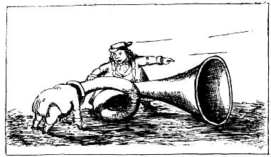
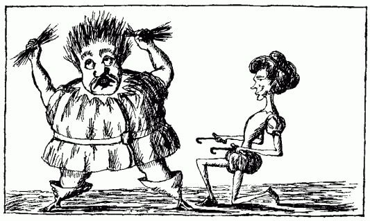
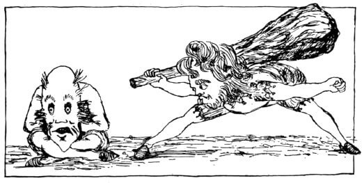
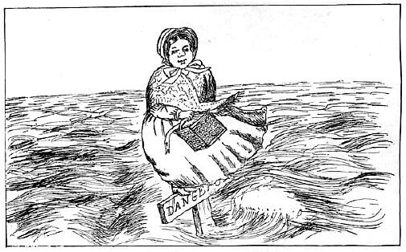

The (almost really) Complete Works of Lewis Carroll
Studies from English Poets
Source: Mischmasch
No. I

“Be rather in the trumpet’s mouth.” F. Tennyson.
No. II

“Alas! what boots—” Milton’s Lycidas. line 64
No. III

“He gave it to his father.” Ossian.
No. VI

“She did so; but ’tis doubtful how or whence—” Keats.